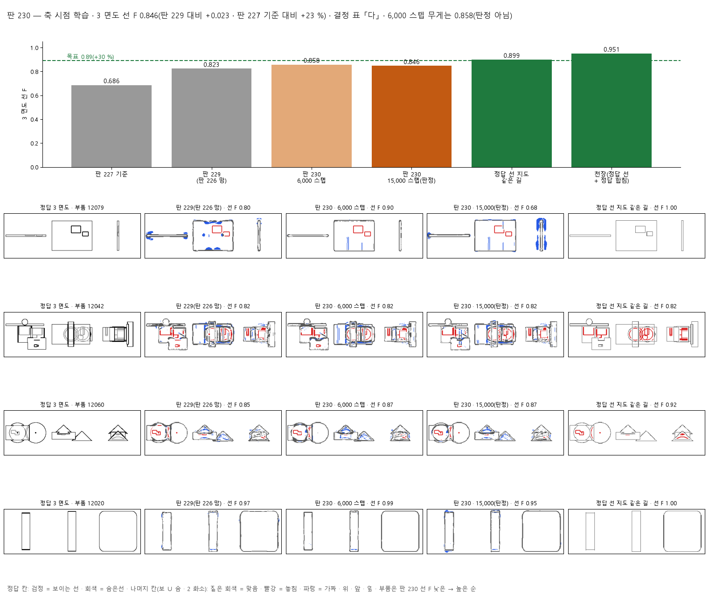

m1_tr0230_h000_축시점학습
3 면도 시점(위 · 아래 · 앞 · 뒤 · 옆 · 반대 옆)을 학습 렌더에 넣으면 예측 3 면도 선 F 가 0.89 에 닿나?
판정 · 다 — 멈춘 무게(15,000 스텝) 3 면도 선 F 0.846(tr229 0.823 대비 +0.023 · tr227 기준 +23 %) · 6,000 무게 0.858(판정 아님 · 15,000 보다 +0.012 · 95 % 구간 0.007 ~ 0.017) · 축 시점 선 F 0.938 · 0.953(tr229 0.908 · 0.928) · 보이는 선 0.917 · 숨은선 0.400 · 멈춤이 본 렌더 윤곽은 올랐는데 3 면도는 떨어짐 → 축 시점 선 오류를 종류별로 셈 · 멈춤 기준을 검증 부품 3 면도로
분석
한 줄로
물음: 3 면도 시점(위 · 아래 · 앞 · 뒤 · 옆 · 반대 옆)을 학습 렌더에 넣으면 예측 3 면도 선 F 가 0.89 에 닿나?
답: 안 닿았다(결정 표 「다」). 판정 무게(멈춤 규칙으로 15,000 스텝)는 0.846 으로 tr229(0.823)보다 0.023 올랐다. tr227 기준 대비 +23 % 로 목표 +30 % 에 못 미친다. 비교로 잰 6,000 스텝 무게는 0.858 로 더 높았다. 렌더 검증이 오를 때까지 더 배운 것이 3 면도에는 손해였다.
왜 이 판을 했나
tr229 에서 3 면도는 위 · 앞 · 옆 · 반대쪽 선 지도만으로 그릴 수 있다는 걸 봤다. 정답 선 지도면 0.899, 예측이면 0.823 이었다. 그 시점(고도 0 · ±90)이 학습 렌더(고도 5 ~ 40)에 없어서 선 지도가 0.91 · 0.93 에 머문다고 봤다. 사용자 목표는 그림 → 3 면도 성능 +30 %(0.686 → 0.89)다.
바꾼 것 하나
학습 렌더에 6 축 시점을 섞었다. 부품마다 6 방향 중 2 개를 렌더해 배치 32 장 중 10 장을 축 시점으로 채웠다. 망 · 손실 · 3 면도 그리기는 tr226 · 229 와 같다. 학습 길이는 사용자 제안(「스텝 더 늘려볼래?」)으로 6,000 에서 끊지 않고 tr223 멈춤 규칙을 따랐다. 렌더 검증 윤곽 F 가 3 번 연속 안 오르면 멈추는 규칙이고, 결과 보기 전에 카드에 적었다.
결과

| 99 부품 | tr230 · 15,000(판정) | tr230 · 6,000 | tr229 | 정답 선 지도 같은 길 | 목표 |
|---|---|---|---|---|---|
| 3 면도 선 F | 0.846 | 0.858 | 0.823 | 0.899 | 0.89 |
| 보이는 선 F | 0.917 | 0.916 | 0.884 | 0.985 | |
| 숨은선 F | 0.400 | 0.399 | 0.381 | 0.336 | |
| 축 시점 선 F · 위 · 앞 · 옆 | 0.938 | 0.932 | 0.908 | — | |
| 축 시점 선 F · 반대쪽 | 0.953 | 0.948 | 0.928 | — | |
| 렌더 시험 윤곽 F · 정사영 · 원근 | 0.943 · 0.950 | 0.939 · 0.945 | 0.947 · 0.953(tr226) | ||
| 실물 55 장 윤곽 F | 0.807 | 0.803 | 0.798(tr226) |
선 F 는 그린 선과 정답 선이 2 화소 안에서 겹치는 정도(정밀도와 재현율의 조화 평균)다. 축 시점 선 F 는 예측 선 지도를 정답 선 지도에 대 본 값이다.
왜 이렇게 나왔나
확인한 것
- 축 시점을 넣자 그 시점 선 지도가 올랐다(위 · 앞 · 옆 0.908 → 0.938 · 반대쪽 0.928 → 0.953). 보이는 선이 0.884 → 0.917 로 따라 올랐다.
- 부품별로 짝지어 보면 6,000 무게가 tr229 보다 +0.035(95 % 구간 0.026 ~ 0.046 · 75 개 나아짐 · 3 개 나빠짐)다. 15,000 무게는 6,000 보다 −0.012(구간 −0.017 ~ −0.007 · 48 개 나빠짐 · 13 개 나아짐)다.
- 멈춤 규칙이 본 렌더 검증 윤곽 F 는 6,000 → 15,000 에 0.936 → 0.941(축 시점)로 올랐다. 그런데 3 면도는 내려갔다. 멈춤이 본 숫자와 판정 숫자가 달랐다.
- 가장 크게 나빠진 부품 12079(얇은 판)는 0.90 → 0.68 이다. 옆에서 본 얇은 판을 두꺼운 덩어리로 그렸다.
짐작 (아직 확인 안 함)
- 그림 네 부품에서 15,000 무게의 선은 6,000 보다 두껍거나 두 줄로 나온다. 2 화소 밖으로 번진 선이 가짜(파랑)로 잡혀 3 면도 F 를 깎는 것 같다. 축 시점 선 F 는 오히려 올랐으니 지도 단계보다 3 면도 틀로 옮기는 단계에서 번짐이 커지는지 봐야 한다.
- 결정 표 「다」의 말(「축 시점을 넣어도 선이 안 오름」)은 이번 결과와 맞지 않는다. 선은 올랐다. 다만 표가 정한 다음 일(축 시점 선 오류를 종류별로 셈)은 남은 차이가 있는 자리와 같다.
한계
- 시험 99 부품 · 씨앗 하나 · 한 번 돌림.
- 학습이 4,000 ~ 5,000 스텝에서 메모리 부족으로 한 번 꺼져 같은 씨앗으로 처음부터 다시 돌렸다. 1,000 ~ 4,000 곡선은 꺼진 판과 소수점까지 같았다.
- 판정은 미리 정한 대로 멈춘 무게다. 6,000 이 더 높다고 판정을 바꾸지 않는다(결과를 보고 고르면 시험지에 맞춘 셈이 된다).
배운 것과 다음
축 시점을 배우면 3 면도는 0.86 근처까지 오른다. 오래 배울수록 렌더 윤곽은 오르지만 3 면도는 떨어졌다. 학습을 멈추는 기준도 3 면도를 봐야 한다.
- 결정 표 「다」: 축 시점 선 오류를 종류별로 센다(얇은 판 두께 · 안쪽 구멍 선 · 겹친 선 · 선 굵기 · 틀 경계). 6,000 과 15,000 을 같이 세서 두꺼워진 선이 어디서 오는지 본다.
- 멈춤 기준을 바꾸는 판: 검증 부품(11000 ~ 11999)에서 3 면도 선 F 를 재서 그걸로 멈춘다. 시험 99 는 건드리지 않는다.
- 지금까지: tr227 기준 0.686 → 판정 0.846(+23 %) · 6,000 무게 0.858(+25 %).
판 기록
- 카드 · 코드 커밋 d4289a5(돌리기 전) · 덧 dd58a14(결과 전 — 멈춤 규칙 · 학습 배열 사본을 C NVMe 에서 읽음)
- 데이터 58 분(12,067 부품 · 실패 6) · DA 4 분 · 학습 72.7 분(15,000 스텝 멈춤 · 1,000 스텝 4.9 분) · 시험 두 번 약 10 분
- 첫 돌림은 G 하드 디스크에서 1,000 스텝 16.2 분(GPU 반쯤 놂)이라 멈추고 SSD 사본으로 다시 · 둘째 돌림은 메모리 부족으로 꺼짐 · 셋째 돌림이 이 결과
- 판정 잼.json · 6,000 무게 잼_6000.json · 그림 그림.png · 학습 보기 https://claude.ai/artifact/8hnYfv8qeJQYk3dZD41rFa